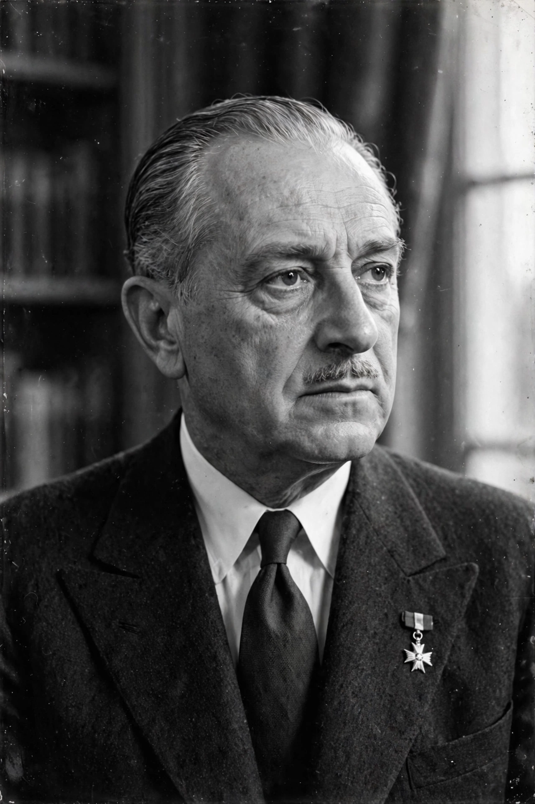

Paul Reynaud

| Paul Reynaud | |
| Born | 15 October 1878, Barcelonnette, France |
|---|---|
| Died | 21 September 1966, Neuilly-sur-Seine, France |
| Office | Prime Minister of France (March–June 1940) |
| Other posts | Minister of Finance (1938–1940); deputy; minister under the Fourth Republic |
| Party | Democratic Republican Alliance / independent |
Paul Reynaud (15 October 1878 – 21 September 1966) was a French politician and lawyer who served as Prime Minister of France from March to June 1940, during the opening of the Battle of France. An early advocate of devaluation, rearmament and armoured warfare, he led the French government through the German invasion but, unable to secure support for continuing the war from North Africa, resigned and was succeeded by Philippe Pétain, who sought an armistice.
- Early career
- Prime minister, 1940
- Imprisonment
- Postwar career
Early career
Born in Barcelonnette in the Alps, Reynaud became a successful Paris lawyer and was elected to the Chamber of Deputies in 1919. He held a succession of ministries in the 1930s — finance, colonies and justice — and built a reputation as an independent, combative figure of the centre-right. He opposed the appeasement of Nazi Germany, attacked the economic orthodoxy of the gold standard, and as Minister of Finance from November 1938 in Édouard Daladier's government imposed liberalising reforms that revived French production and rearmament before the war. He was also one of the few senior politicians to champion the armoured-warfare theories of Charles de Gaulle.
Prime minister, 1940
Reynaud replaced Daladier on 21 March 1940, also taking the foreign affairs portfolio, and in May brought Pétain into his government as deputy premier. When Germany attacked on 10 May, Reynaud's government followed the collapsing front from Paris to Tours and then Bordeaux. He replaced the commander-in-chief Gamelin with Weygand and appealed desperately for British and American help. As the military situation disintegrated, his cabinet split: Reynaud wished to move the government to French North Africa and fight on; the majority, led by Pétain and Weygand, demanded an armistice. Outvoted, Reynaud resigned on 16 June 1940. President Lebrun appointed Pétain, and the armistice followed six days later.
Imprisonment
Reynaud was arrested by the Vichy regime and was a defendant at the Riom Trial of 1942, where the accused leaders of the Third Republic turned the proceedings against their accusers. Handed over to the Germans, he was imprisoned in Germany and Austria until liberated in 1945.
Postwar career
Returned to politics after the war, Reynaud sat in the National Assembly, served briefly as minister of finance in 1948, and remained an influential elder statesman of the Fourth Republic. He chaired the consultative assembly that prepared de Gaulle's return in 1958 but broke with the General over his European policy and his 1962 referendum on direct presidential elections. His memoirs are a major source for the crisis of 1940.
See also: Philippe Pétain; Armistice of 22 June 1940; Battle of France; Free France.